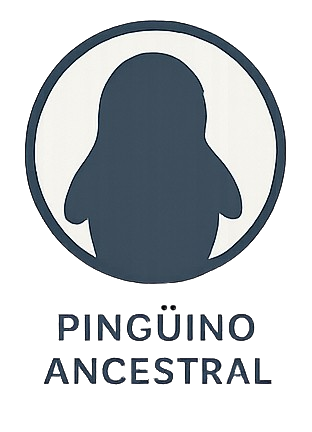

Miembro desde:
01/01/2026
Nombre:
Carlos Alberto Piñeiro Italiani
Seguidores:
1000
Alias:
Atlas
Seguidos:
15
Correo electrónico:
carlositaliani@gmail.com
Contraseña:
******
Insignia:

Biografía:
Soy el desarrollador de esta aplicación, una red social multiplataforma creada como parte de mi
Trabajo de Fin de Grado del ciclo formativo de Desarrollo de Aplicaciones Multiplataforma (DAM).
Este proyecto ha sido desarrollado de manera individual y representa la culminación de los
conocimientos y competencias adquiridas a lo largo de mi formación. La aplicación está con el
objetivo de ofrecer un espacio de interacción entre usuarios, fomentando la comunicación y el
intercambio de contenido de forma sencilla, intuitiva y accesible desde diferentes plataformas.
Durante su desarrollo se han puesto aspectos críticas como la usabilidad, el diseño de la interfaz y
la correcta implementación de funcionalidades. Para garantizar un funcionamiento estable y
escalable. Este proyecto me ha permitido aplicar de forma práctica conceptos clave como el
desarrollo multiplataforma, la gestión de datos, la comunicación entre cliente y servidor, y la
planificación integral de un producto software, desde la idea inicial hasta su implementación final.
Además, ha supuesto una oportunidad para reforzar habilidades como la resolución de problemas, la
autonomía en el desarrollo y la mejora continua del código. Esta aplicación no solo representa mi
proyecto académico, sino también un reflejo de mi interés por el desarrollo de software y mi
motivación en seguir creciendo profesionalmente en este ámbito.